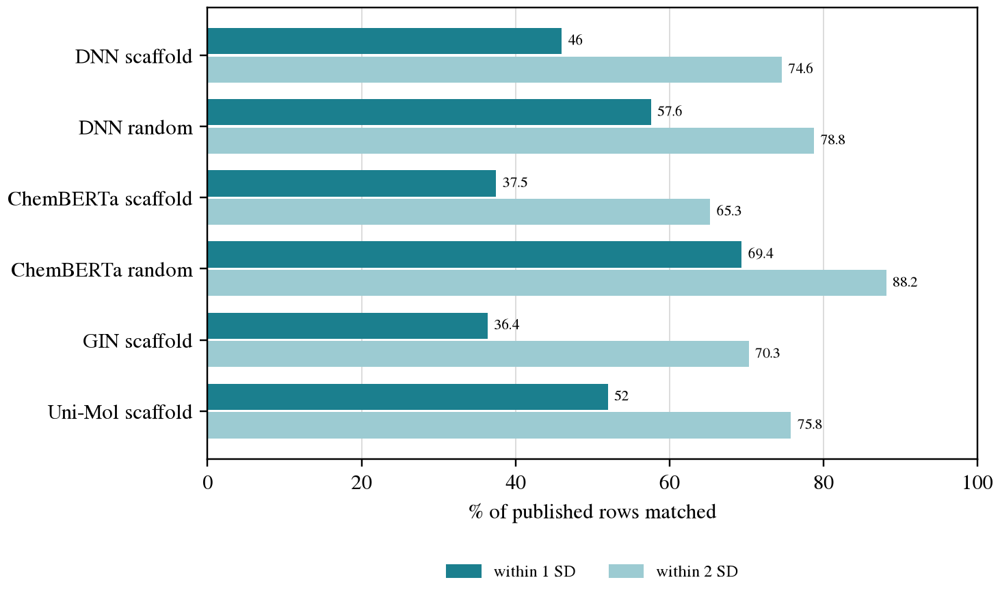
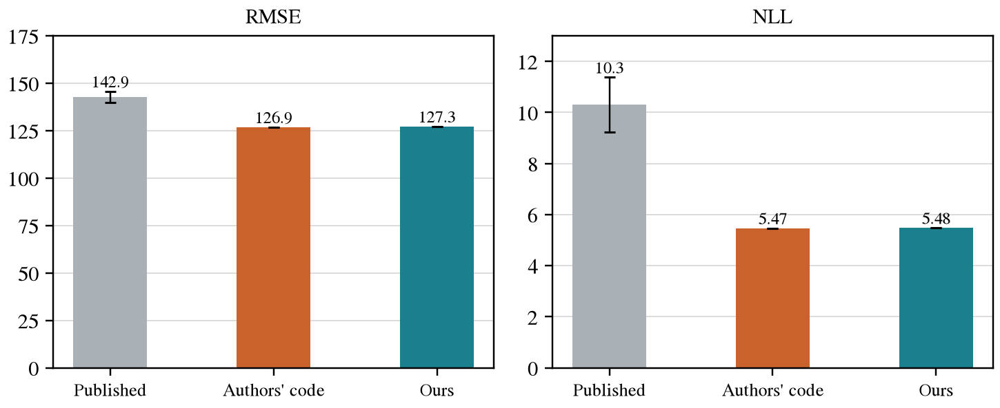
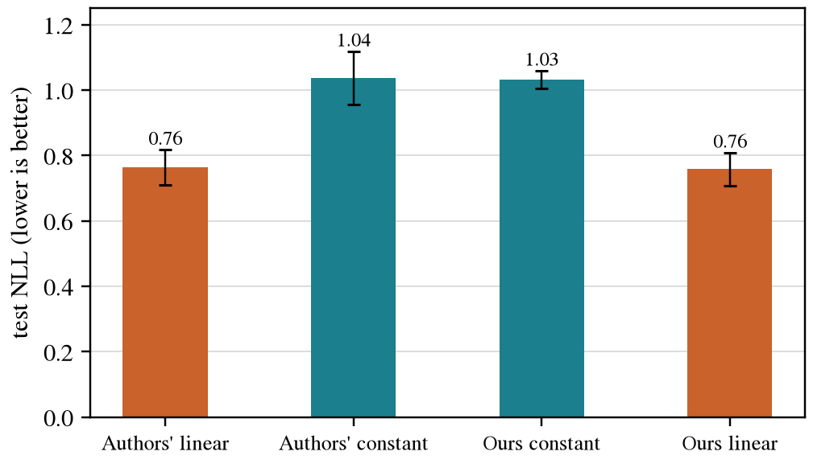

Reproducing MUBen: how reliable are the uncertainty estimates of molecular property models?
Technical report 1 of 2: reproduction of the selected paper
Contents
Goals
Summary
1. The selected paper
2. What was reproduced and how
3. H1: the published tables reproduce within seed noise
4. H2: our pipeline is interchangeable with the authors’ trainers
5. H3: the paper’s conclusions hold on the reproduced numbers
6. Discussion
7. Limitations
8. Conclusion
9. Implementation and how to reproduce
Goals
This report reproduces MUBen: Benchmarking the Uncertainty of Molecular Representation Models (Li et al., arXiv 2306.10060v4). MUBen asks how reliable the uncertainty estimates of molecular property models are. Our goals:
Reproduce the published tables for four molecular models (descriptor DNN, ChemBERTa, GIN, Uni-Mol) on eight datasets, with the authors’ scaffold splits and with random splits.
For every gap between our numbers and the published ones, decide whether it comes from our implementation, from an unreported setting, or from the published run, by running the authors’ own code.
Check the paper’s conclusions on the reproduced numbers.
Document the paper’s contributions and limitations, and everything needed to repeat the work.
Report 2 builds on the networks reproduced here and tests two uncertainty methods that MUBen does not contain.
Summary
The published tables reproduce partly. Of 1,072 rows (DNN and ChemBERTa, both split types) 53.5 % agree within one published standard deviation and 77.2 % within two; GIN 36.4 % and 70.3 %; Uni-Mol 52.0 % and 75.8 %. Published SDs come from three seeds; a perfect copy would match only about 60 % within one SD, so the agreement is closer to its ceiling than the raw counts suggest. The largest gaps are regression NLL and calibration error, ChemBERTa on scaffold splits, and the DNN on QM7.
Our pipeline is interchangeable with the authors’ trainers, but two published numbers remain unexplained. We ran the authors’ unmodified trainers next to our pipeline. They agree wherever the settings are matched: Uni-Mol (13 of 13 comparisons), GIN regression (16 of 16), ChemBERTa ESOL (NLL 1.037 against 1.033, both with the constant learning rate that is the code default) and the DNN on QM7 (NLL 5.47 against 5.48). Two gaps traced to the learning-rate schedule: for GIN the paper states a constant rate but the released code defaults to a linear one, and our GIN agrees on 20 of 20 classification comparisons only once it uses that linear schedule; for ChemBERTa the paper states no schedule and the choice moves ESOL NLL by about 0.27. Two published numbers are not reproduced by the authors’ own code under any setting we tried: DNN QM7 NLL (10.30) and ChemBERTa ESOL NLL (2.28); their cause cannot be determined from the released tables.
Two of the paper’s explanatory claims are not supported (larger models are worse calibrated; the choice of uncertainty method matters more for larger models), while the direction of most method-level claims reproduces.
Main lesson. An unreported training setting can move calibration metrics as much as a change of method, so reproduction of uncertainty benchmarks needs the schedule, seeds and aggregation rules, not only the architecture.
1. The selected paper
1.1 What it does
Machine-learning models predict molecular properties (solubility, toxicity, binding) to decide which compounds to make and test. A prediction is only as useful as the statement of how reliable it is, and the realistic case is a new chemical series unlike the training data. MUBen is a benchmark for exactly this. It combines six molecular models (a descriptor network, the pre-trained language model ChemBERTa, the pre-trained graph model GROVER, a graph isomorphism network GIN, the 3D model Uni-Mol, and TorchMD-NET) with eight uncertainty quantification (UQ) methods (the plain network, temperature scaling, focal loss, MC dropout, SWAG, Bayes by backprop, SGLD, deep ensembles) on molecular classification and regression datasets, with scaffold and random splits, and reports accuracy and calibration (ROC-AUC, ECE, NLL, Brier; RMSE, MAE, NLL, calibration error) as mean and SD over three seeds.
1.2 Contributions
The first systematic comparison of UQ methods across several molecular representations on common data, with released code and result tables.
Method-level conclusions (for example that deep ensembles are usually the most accurate, that MC dropout and temperature scaling lower NLL, and that BBP and SGLD do not improve accuracy) and a strong dependence of results on the split, with scaffold splits harder than random ones; both are checked in Section 5.
Two explanatory claims about model size and method choice, also tested in Section 5.
1.3 Limitations (our assessment, with the evidence found in this study)
Aggregated outputs only. The repository releases means and SDs per method, not predictions, checkpoints or logs, so a published number that looks wrong cannot be inspected (Sections 3 and 4).
Under-reported settings. The learning-rate schedule is not stated for ChemBERTa, and for GIN the paper states a constant rate while the released code defaults to a linear schedule; the schedule changes calibration metrics substantially (Section 4).
Three seeds. SDs from three seeds are noisy and often tiny, which makes agreement tests fragile.
No distribution-shift guarantees and no trivial baselines. The benchmark does not test methods with coverage guarantees, and does not compare against a one-parameter recalibration (Report 2).
Fixed scaffold splits. One scaffold split per dataset: split variance is not measured.
2. What was reproduced and how
Table 1: Terms and metrics used in both reports.
Term
Meaning in this report
Scaffold split
test molecules have a core ring structure (Bemis–Murcko scaffold) that is absent from the training set; it imitates a new chemical series. A random split puts close analogues in training and test
NLL
negative log-likelihood of the observed value under the predicted distribution (Gaussian for regression, Bernoulli for classification); lower is better and it penalises both wrong and over- or under-confident predictions
ECE / CE
calibration error: for classification (ECE) the gap between predicted probability and observed frequency, binned; for regression (CE) the gap between nominal and observed coverage of predicted intervals
ROC-AUC, Brier, RMSE, MAE
ranking quality (ROC-AUC), mean squared probability error (Brier), root and absolute mean error of the predicted value (RMSE, MAE)
Published SD, z, d
SD over the authors’ three seeds; $z=(\bar x_{\text{ours}}-\bar x_{\text{pub}})/\mathrm{SD}_{\text{pub}}$; $d$ = difference of means divided by the pooled seed SD, used when both sides have several seeds
Item
Setting
Models
DNN on 200 normalised RDKit descriptors (8 linear 128-wide GELU layers, dropout 0.1); ChemBERTa-77M-MLM (3.4 M parameters); GIN (authors’ encoder, 5 layers, 128 hidden units, 0.26 M parameters); Uni-Mol (authors’ encoder, 47.6 M parameters, 11 conformers per molecule). GROVER (checkpoint link unreachable) and TorchMD-NET were not run
Scaffold: the authors’ files (the “unseen drug” case). Random: three splits from the authors’ algorithm (two successive train_test_split calls, random_state 0 to 2, original sizes). Uni-Mol: scaffold only
UQ methods
Deterministic, temperature scaling and focal loss (classification only), MC dropout, SWAG, Bayes by backprop (BBP), SGLD, deep ensembles
Seeds
Scaffold: seeds 0, 100, 200 for single-model methods and one pooled 10-member ensemble (as published, no SD). Random: one seed per split, 3-member ensembles
Implementation
Our own training pipeline, which imports the authors’ SWAG, BBP and SGLD modules, GIN and Uni-Mol encoders and featurisers, and copies their metric definitions after reading their source. The authors’ own trainers are used for the bridge checks
Agreement rule
A row (method, metric, dataset) agrees at $k$ if $|\bar x_{\text{rep}}-\bar x_{\text{pub}}|\le k\cdot \mathrm{SD}_{\text{pub}}$; rows with a published SD of 0 are not counted
Rigor
Every analysis was fixed in a protocol with a hash before it was run; training units are resumable and write completion markers; test metrics are computed only behind a FROZEN marker per model, split and dataset; no setting was changed after seeing test results
Cost: the DNN runs on CPU; ChemBERTa, GIN and Uni-Mol on one GPU in FP32 with deterministic algorithms. GIN (336 fits) took 2.7 GPU-hours; Uni-Mol took 14.4 GPU-hours for 80 Deterministic and ensemble fits and about 7 more for the remaining methods. Uni-Mol batches of 128 were realised by gradient accumulation over micro-batches of 32 where memory required it; the gradient is the same.
3. H1: the published tables reproduce within seed noise
Hypothesis. For every model and split, most published rows are reproduced within two published standard deviations. “Most” was not given a numerical threshold in advance; we therefore report the fractions and compare them with the ceiling that three-seed noise alone would allow (simulated below), and we call the hypothesis supported only if the fractions are close to that ceiling.
Table 2: Agreement with the published tables (rows with a published SD). Uni-Mol: all eight UQ methods, scaffold only; not comparable with the other totals (different method set and split types). GIN has 236 countable rows because 12 ClinTox rows have a published SD of exactly 0; the published tables contain no GIN random-split rows.
Backbone
Split
Rows
Within 1 SD
Within 2 SD
DNN
scaffold
248
114 (46.0 %)
185 (74.6 %)
DNN
random
288
166 (57.6 %)
227 (78.8 %)
ChemBERTa
scaffold
248
93 (37.5 %)
162 (65.3 %)
ChemBERTa
random
288
200 (69.4 %)
254 (88.2 %)
GIN
scaffold
236
86 (36.4 %)
166 (70.3 %)
Uni-Mol
scaffold
248
129 (52.0 %)
188 (75.8 %)

Figure 1: How closely we reproduce the published MUBen tables: share of published rows (with a published SD) matched within 1 and 2 SD. Why it matters: about half of the rows match within one published SD and about three quarters within two; the published SDs come from only three seeds, so most misses are 1 to 3 % in natural units.
Table 3: Uni-Mol agreement by UQ method (rows with a published SD; the scaffold ensemble has none).
Method
Rows
Within 1 SD
Within 2 SD
MC dropout
40
28 (70 %)
36 (90 %)
Deterministic
40
21 (53 %)
34 (85 %)
Temperature scaling
24
12 (50 %)
23 (96 %)
Focal loss
24
14 (58 %)
19 (79 %)
BBP
40
24 (60 %)
29 (73 %)
SWAG
40
15 (38 %)
24 (60 %)
SGLD
40
15 (38 %)
23 (58 %)
The counts are a pessimistic measure. Published SDs come from three seeds. In a simulation with Gaussian noise, three seeds on each side and independent rows, a perfect reproduction would match about 58 to 65 % of rows within one SD and 82 to 87 % within two. Our 53.5 % and 77.2 % are therefore not far from the ceiling; the real shortfalls are ChemBERTa and GIN on scaffold splits (about 37 % within one SD). In natural units the Deterministic GIN differs from the published value by a median of 2.8 % in ROC-AUC and 6.0 % in RMSE; the most extreme z-score (QM7 RMSE, z = −21.7) is a 1.2 % difference against a published SD of 0.06 % of the value.
Agreement depends on the method. For Uni-Mol, MC dropout agrees best (70 % within one SD) and SWAG and SGLD least (38 %); classification metrics agree well and regression NLL and MAE less well. GIN SGLD diverges on regression for one seed in our runs, and the published GIN tables also show unstable SGLD (ESOL RMSE 3.32 ± 2.12), so this is probably not specific to our pipeline.
Where the disagreement concentrates. Regression NLL and calibration error (CE), and ChemBERTa on scaffold splits (median z for ROC-AUC −2.05, for RMSE +1.74, for CE −3.04). The reproduced regression NLL is often far below the published one (Table 4). The cause is not an arithmetic error: an independent recomputation of the Gaussian NLL equals the stored value for all 272 regression groups. Our learned variances are close to calibrated on random splits and overconfident on scaffold splits (90 % intervals cover 0.80 to 0.81 on scaffold, 0.88 to 0.92 on random).
Table 4: Deterministic regression NLL, published and reproduced.
Model
Dataset
Scaffold: published
Scaffold: ours
Random: published
Random: ours
ChemBERTa
ESOL
2.280
1.033
0.377
0.258
ChemBERTa
FreeSolv
1.786
1.651
0.827
0.784
ChemBERTa
Lipo
1.237
0.544
1.447
0.467
ChemBERTa
QM7
6.962
5.307
4.593
4.594
DNN
ESOL
1.003
0.675
0.107
0.011
DNN
FreeSolv
1.337
1.754
0.726
0.814
DNN
Lipo
0.615
0.616
0.616
0.147
DNN
QM7
10.298
5.477
5.523
4.554
Verdict: partly supported. Within two published SDs, 77 % (DNN and ChemBERTa), 70 % (GIN) and 76 % (Uni-Mol) of rows are reproduced, against a noise ceiling of about 82 to 87 %. The reproduction is good for classification accuracy and for most random-split rows, and weaker for regression calibration and for ChemBERTa and GIN on scaffold splits. Section 4 examines where the gaps come from. The counts treat rows as independent, although rows of the same dataset and method are correlated, so they describe agreement and are not a significance test.
4. H2: our pipeline is interchangeable with the authors’ trainers, so the gaps come from settings or from the published run
Hypothesis. When the settings are matched, the authors’ unmodified trainer gives the same numbers as our pipeline; a remaining gap with the published tables then comes from an unreported setting or from the published run, not from our implementation. If instead our implementation were the cause, the two trainers would disagree. Agreement is judged by $$d=\frac{\bar x_{\text{authors}}-\bar x_{\text{ours}}}{s_{\text{pooled}}}$$ with a Welch 95 % interval for the difference of means: consistent if $|d|<1$; different if $|d|\ge 1$ and the interval excludes 0.
Table 5: Bridge checks against the authors’ own trainers (Deterministic, scaffold).
Backbone
Comparisons
Outcome
DNN
ESOL, QM7 (3 seeds)
Authors’ code with paper settings reproduces our QM7 NLL (5.47 vs 5.48), not the published 10.30 (4.1)
ChemBERTa
ESOL, QM7 (3 seeds)
Agree under the same schedule (ESOL NLL 1.037 vs 1.033 constant, 0.764 vs 0.758 linear); the published ESOL NLL 2.28 is not reproduced (4.2)
GIN
all datasets (10 seeds; Tox21: 5)
Regression 16 of 16 consistent; classification 14 of 20, and 20 of 20 with the authors’ schedule (4.3)
Uni-Mol
ESOL, BACE (10 seeds), QM7 (5)
13 of 13 consistent, largest |d| 0.81 (4.4)
4.1 DNN: the published QM7 numbers are not reproduced by the authors’ own code
We cloned the authors’ repository at the pinned commit, built its environment from its requirements, and ran their unmodified trainer for the DNN with the settings in the paper’s Appendix B (GELU, batch 256, learning rate 2e-4, 400 epochs, tolerance 50, 158,082 parameters), seeds 0 to 2, with their own metric functions.
Table 6: DNN, scaffold, Deterministic. On QM7 the authors’ code agrees with our pipeline and not with the published row.
Dataset / metric
Published (SD)
Our pipeline
Authors’ code, paper settings
ESOL RMSE
0.905 (0.029)
0.913
0.906
ESOL NLL
1.003 (0.377)
0.675
0.761
ESOL CE
0.0465 (0.0052)
0.0465
0.0475
QM7 RMSE
142.9 (2.9)
127.3
126.9
QM7 MAE
95.7 (3.3)
85.2
84.2
QM7 NLL
10.30 (1.08)
5.48
5.47
QM7 CE
0.0393 (0.0036)
0.0152
0.0167
The difference between our QM7 numbers and the published ones therefore lies in the published run (a different setting, version or run; the released tables do not allow more). A Gaussian with constant standard deviation reaching NLL 10.3 would need $\sigma\approx 39$ against an RMSE of 143, whereas calibrated variances give about 5.5, which is what both implementations obtain; the published QM7 NLL is 5.25 for GIN and 4.62 for Uni-Mol, so the DNN value stands out.
Architecture. The paper lists 0.158 M parameters for the DNN, i.e. nine linear 128-wide layers; our network had eight (0.142 M). Depth made no measurable difference on ESOL or QM7. The one remaining paper/code difference is the activation (paper: GELU; code default: ReLU).
Descriptor versions. Recomputing the 200 descriptors in the authors’ environment (RDKit 2023.09 against our 2024.09) gives identical values on six of eight datasets; eight Tox21 SMILES (0.1 %) do not parse in the newer RDKit and get zero descriptors. Immaterial.

Figure 2: The authors’ own code does not reproduce the published QM7 numbers (DNN, scaffold, Deterministic; published SD as whiskers). With the paper’s settings their unmodified trainer reproduces our results (RMSE 126.9 vs 127.3, NLL 5.47 vs 5.48) and not the published ones (142.9 and 10.30). Why it matters: a reproduction gap is not always a reproduction failure; here the difference lies in the published run.
4.2 ChemBERTa: the schedule moves the result, and the pipelines agree under either schedule
The paper states no learning-rate schedule for ChemBERTa, and the authors’ code default is a constant rate, which our pipeline also uses. Our first comparison launched the authors’ trainer with a linear schedule (10 % warm-up), a setting we chose and not the code default, and it gave ESOL NLL 0.764 against our 1.033. We therefore ran both pipelines under both schedules (three seeds each). Under the same schedule the pipelines agree (constant 1.037 against 1.033; linear 0.764 against 0.758), so the difference was the schedule we had passed to the authors’ trainer, not our implementation. Which schedule the authors used is unknown; neither reproduces the published ESOL NLL of 2.28.
Table 7: ChemBERTa, scaffold, Deterministic (mean ± SD over three seeds). Under the same schedule the two pipelines agree; the schedule moves ESOL NLL by about 0.27 and QM7 NLL by about 0.2. Neither schedule reaches the published ESOL NLL of 2.28.
Dataset
Arm
RMSE
NLL
CE
ESOL
authors’ trainer, linear schedule
1.150 ± 0.012
0.764 ± 0.054
0.0301
ESOL
authors’ trainer, constant schedule
1.084 ± 0.013
1.037 ± 0.082
0.0385
ESOL
our pipeline, constant schedule
1.090 ± 0.014
1.033 ± 0.027
0.0383
ESOL
our pipeline, linear schedule
1.147 ± 0.046
0.758 ± 0.051
0.0308
ESOL
our pipeline, PyTorch-default head initialisation (constant)
1.066 ± 0.001
0.985 ± 0.060
0.0413
QM7
authors’ trainer, linear / constant
116.9 / 116.4
5.105 / 5.183
0.0144 / 0.0157
QM7
our pipeline, constant / linear
115.4 / 116.8
5.307 / 5.101
0.0166 / 0.0144

Figure 3: A gap that was a setting, not a bug: ChemBERTa, ESOL, scaffold, test NLL (mean ± SD, 3 seeds). Orange = linear schedule with 10 % warm-up, teal = constant schedule (code default). Why it matters: the authors’ trainer and ours disagree only when they use different schedules; an unreported setting can look like a reproduction failure or a method effect.
4.3 GIN: regression agrees; the classification gap was the same schedule effect
With ten seeds our GIN matches the authors’ trainer on all 16 regression comparisons (RMSE, MAE, NLL and CE on four datasets; an earlier three-seed ESOL miss of 2.07 SD was a seed-count artefact: the pooled SD is 0.166 with ten seeds and 0.068 with three). On classification, 14 of 20 comparisons were consistent and five differed, in every case in favour of our GIN (for example BACE ECE 0.17 against 0.30, ClinTox ROC-AUC 0.69 against 0.65). Head initialisation and the model-selection metric were ruled out. The authors’ GIN code sets a linear learning-rate schedule by default (the paper states a constant rate). Retraining our GIN with that schedule and nothing else changed makes all 20 classification comparisons consistent:
Table 8: GIN classification bridge, scaffold, Deterministic (ten seeds; Tox21 five). Constant schedule: 14 consistent, 5 different, 1 unclear. Linear schedule: 20 of 20 consistent. That the authors’ runs used their code default is inferred from this agreement; their launch command is not available.
Dataset
Metric
Authors’ trainer
Our GIN, constant schedule
Our GIN, linear schedule
BACE
ROC-AUC
0.7333
0.7215 (d 0.25; consistent)
0.735 (d −0.04; consistent)
BACE
PRC-AUC
0.7231
0.7083 (d 0.39; consistent)
0.7036 (d 0.56; consistent)
BACE
ECE
0.3036
0.1678 (d 1.23; different)
0.227 (d 0.53; consistent)
BACE
NLL
1.8987
0.7055 (d 0.89; consistent)
1.1833 (d 0.47; consistent)
BACE
Brier
0.3339
0.2371 (d 1.29; different)
0.2855 (d 0.48; consistent)
BBBP
ROC-AUC
0.6182
0.6214 (d −0.14; consistent)
0.6252 (d −0.43; consistent)
BBBP
PRC-AUC
0.6048
0.6148 (d −0.39; consistent)
0.617 (d −0.63; consistent)
BBBP
ECE
0.2459
0.2407 (d 0.24; consistent)
0.2416 (d 0.22; consistent)
BBBP
NLL
1.0733
1.0957 (d −0.38; consistent)
1.0687 (d 0.15; consistent)
BBBP
Brier
0.2956
0.2951 (d 0.05; consistent)
0.2951 (d 0.07; consistent)
ClinTox
ROC-AUC
0.6457
0.6918 (d −1.04; different)
0.6359 (d 0.23; consistent)
ClinTox
PRC-AUC
0.5553
0.6014 (d −1.24; different)
0.5512 (d 0.11; consistent)
ClinTox
ECE
0.1813
0.1213 (d 0.94; consistent)
0.1879 (d −0.08; consistent)
ClinTox
NLL
0.4206
0.3966 (d 0.32; consistent)
0.4383 (d −0.21; consistent)
ClinTox
Brier
0.1174
0.0941 (d 0.84; consistent)
0.1217 (d −0.11; consistent)
Tox21
ROC-AUC
0.6789
0.6919 (d −2.73; different)
0.6767 (d 0.57; consistent)
Tox21
PRC-AUC
0.3171
0.3265 (d −0.82; consistent)
0.3096 (d 0.72; consistent)
Tox21
ECE
0.0718
0.0715 (d 0.05; consistent)
0.072 (d −0.05; consistent)
Tox21
NLL
0.3508
0.3568 (d −1.33; unclear)
0.3504 (d 0.09; consistent)
Tox21
Brier
0.0884
0.0876 (d 0.3; consistent)
0.0887 (d −0.1; consistent)
4.4 Uni-Mol: the pipelines are interchangeable
Our Uni-Mol pipeline imports the authors’ model, dataset and collator and uses our head, loop and scoring. Against the authors’ unmodified trainer (ESOL and BACE ten seeds, QM7 five) all 13 comparisons are consistent (largest |d| 0.81): ESOL RMSE 0.851 (authors) against 0.838 (ours), BACE ROC-AUC 0.820 against 0.828, QM7 NLL 4.397 against 4.479.
Verdict: partly supported. Supported for our implementation: the pipelines agree with the authors’ trainers wherever the setting is matched (Uni-Mol, GIN regression, GIN classification and ChemBERTa once the schedule is matched). Not settled for the published numbers: the gaps to the published DNN QM7 NLL (10.30) and ChemBERTa ESOL NLL (2.28) remain, and the authors’ own code does not reproduce them either. The checks cover Deterministic networks on scaffold splits and a few datasets, with three to ten seeds, so they show consistency, not exact equivalence.
Table 9: Further cases found while testing.
Case
What we found
Tiny published SDs
GIN QM7 RMSE is only 1.2 % from the published value but 21.7 published SDs away: the published SD is 0.06 % of the value, while our own seeds vary by 1.6 %
Too few seeds
GIN ESOL RMSE was 2.07 SD from the authors’ trainer with 3 seeds and consistent with 10 seeds (d = −0.40)
Published ChemBERTa ESOL NLL
Published 2.28; the authors’ trainer gives 0.76 (linear) or 1.04 (constant); ours 1.03 or 0.76
Silent failures
All 13 ClinTox Uni-Mol units failed with GPU out-of-memory without an alarm; one evaluation stage finished in 6 s without doing its work. Both were found by checking that outputs changed
Random splits
Verified identical to the authors’ routine on the Uni-Mol source files (all eight datasets, three seeds)
5. H3: the paper’s conclusions hold on the reproduced numbers
Hypothesis. (a) the direction of the paper’s method-level claims reproduces; (b) two explanatory claims hold: larger models are worse calibrated, and the choice of UQ method matters more for larger models. Each claim is counted per dataset, and support needs at least 6 of 8 datasets; the definitions were fixed before the data were read.
Table 10: Method-level claims: the directions mostly reproduce; the largest changes are for GIN. For Uni-Mol: ensembles best 5 → 6 of 8, MC dropout 3 → 8, temperature 4 → 4, BBP 1 → 2, SGLD 2 → 1.
Claim (datasets where it holds, of 8 unless stated)
DNN scaffold
DNN random
ChemBERTa scaffold
ChemBERTa random
GIN scaffold
Ensembles best on RMSE or ROC-AUC (published → reproduced)
6 → 7
4 → 6
3 → 2
4 → 5
7 → 5
MC dropout NLL below Deterministic
6 → 7
7 → 7
8 → 6
8 → 8
3 → 6
Temperature scaling lowers NLL (of 4)
4 → 3
4 → 4
4 → 4
4 → 4
3 → 3
BBP ROC-AUC below Deterministic (of 4)
2 → 4
3 → 3
3 → 4
3 → 4
4 → 3
SGLD ROC-AUC below Deterministic (of 4)
2 → 1
3 → 4
2 → 2
3 → 2
4 → 3
Table 11: Cross-model claims. None reaches 6 of 8 in any row. For regression, Uni-Mol, the largest model, has the largest Deterministic calibration error on all four datasets, consistent with the paper’s remark; but the three models differ in more than size (input type, pre-training), and Uni-Mol has more methods to choose the best from, which favours claim (b).
Cross-model claim
Measure
Scaffold
Random
(a) larger models are worse calibrated
calibration error (ECE or CE)
2 of 8 (3 models); Uni-Mol as largest: 5 of 8
2 of 8
NLL
0 of 8 (Uni-Mol: 2 of 8)
2 of 8
(b) method choice matters more for larger models
calibration error
0 of 8 (Uni-Mol: 2 of 8)
0 of 8
NLL
1 of 8 (Uni-Mol: 4 of 8)
4 of 8
Verdict: partly supported. The direction of the method-level claims mostly reproduces. The two cross-model explanatory claims are not supported under the rule fixed in advance.
6. Discussion
What can be relied on. Classification accuracy, most random-split rows and the direction of most method comparisons reproduce. Our pipeline is interchangeable with the authors’ trainers wherever settings are matched, so it is a sound base for further experiments (Report 2).
Why calibration metrics are fragile. The learning-rate schedule changed ChemBERTa ESOL NLL by about 0.27 and GIN classification ECE by up to 0.14 (BACE: 0.17 with the constant and 0.23 with the linear schedule; authors’ trainer 0.30). Calibration metrics reward honest variances, which depend on how long and how smoothly the network trains. A benchmark that reports architectures and methods but not the schedule can therefore look irreproducible. This is an observation on ChemBERTa (ESOL, QM7) and GIN (four classification datasets); other models were not tested.
What the paper’s authors could do. Release predictions and the exact launch commands, report schedules and seeds, and state aggregation rules for ensembles (the pooled ensemble variance is an average of member variances, without the between-member spread).
An unexplained number. The published DNN QM7 NLL (10.30) and the ChemBERTa ESOL NLL (2.28) are not reproduced by the authors’ own code under the paper’s settings. Without the released predictions the cause cannot be determined.
7. Limitations
Seeds. Three seeds for most cells (ten for the bridge checks on GIN and Uni-Mol); published SDs also come from three seeds, so agreement counts have a ceiling below 100 %.
Scope of the bridge checks. Deterministic networks, scaffold splits and a few datasets (DNN and ChemBERTa: ESOL and QM7; Uni-Mol: ESOL, BACE, QM7). Other UQ methods and random splits were not cross-checked against the authors’ code. The GIN comparison with the published tables was not repeated under the linear schedule.
Inferred schedule. That the authors’ GIN and ChemBERTa runs used their code default is inferred from agreement; their launch commands are not available. The random-split seeds of the authors (assumed 0, 1, 2) cannot be checked, although our splits are identical to their routine applied to the Uni-Mol source files (all eight datasets).
Models not run. GROVER (checkpoint link unreachable) and TorchMD-NET; Uni-Mol on random splits. Uni-Mol batches of 128 were realised by gradient accumulation (same gradient, different padding and dropout draws).
Fixed splits. One scaffold split per dataset: conclusions are conditional on those splits. Everything here is exploratory in the sense that no result was confirmed on fresh data.
8. Conclusion
MUBen’s tables reproduce partly: about three quarters of rows within two published SDs, close to the ceiling that three-seed SDs allow, with weaker agreement for regression calibration and for ChemBERTa and GIN on scaffold splits. The gaps are not mainly implementation errors: the authors’ own code agrees with our pipeline wherever the settings match, the GIN classification gap was a learning-rate schedule that the paper contradicts (the code default differs from the stated rate), the ChemBERTa difference was a schedule choice, and two published numbers (DNN QM7 NLL and ChemBERTa ESOL NLL) are not reproduced by the authors’ code. The paper’s two explanatory claims about model size and method choice are not supported by our counts (with the caveat that the models differ in more than size). The practical conclusion for uncertainty benchmarks is to report the training schedule, the seeds and the aggregation rules as part of the method.
9. Implementation and how to reproduce
The code, the protocols (with sha256 hashes), the per-seed metric files and the summary tables are in the repository muben-uq and in the accompanying code package (README, code index, checksum manifest). Each experiment is one folder with its protocol and scripts:
Folder
Content
Used in
expanded_v4
DNN and ChemBERTa pipeline (training units, evaluation behind FROZEN markers) and comparison with the published tables
Report 1
expanded_v8_gin, expanded_v10_unimol
GIN and Uni-Mol with the authors’ encoders; their Laplace stages and controls
Reports 1 and 2
expanded_v9_checks
bridge analysis against the authors’ trainers, descriptor drift, random-split identity, statistics, shift-aware conformal check
Reports 1 and 2
expanded_v11, v12, v17
learning-rate schedule and head-initialisation tests for ChemBERTa and GIN
Report 1
expanded_v6_laplace, v13, v14, v15, v18
last-layer Laplace; schedule test; ten-network analysis; recalibration baseline and wide grid; evidence-based prior and ensembles
Report 2
expanded_v5_conformal, v16_round1
split conformal prediction; few-label and weighted calibration; conformal under the linear schedule
Report 2
Inputs (not redistributed). The authors’ code (MUBen, github.com/Yinghao-Li/MUBen, commit f0ec556, used unmodified), its data files and published tables, the public Uni-Mol and ChemBERTa-77M-MLM checkpoints.
Run order. For each model: prep (features), worker (resumable training units), freeze (a FROZEN marker per split and dataset with the protocol and code digests), evaluate (test metrics only behind a marker); then the comparison scripts (agreement counts, claims), the bridge checks, and the audit scripts.
Environment. Locked requirement files for the CPU base, the GPU stack (PyTorch, torch_geometric, transformers) and the Laplace stage are in the package. Runs used deterministic PyTorch algorithms in FP32 on one GPU of the MBZUAI Slurm cluster. Several scripts contain absolute cluster paths; edit the path line at the top to run elsewhere.
Pitfalls worth knowing. ClinTox ran out of GPU memory with full Uni-Mol batches (gradient accumulation fixed it); a GPU-hiding import order silently moved ChemBERTa inference to the CPU; a post-processing stage skipped datasets that already had results, which a comparison of identical copies exposed. Each was caught by checking that outputs changed after the step.
Verification. The analytic parts of the later extension (Report 2) have unit tests; the reproduction pipeline is verified by the bridge checks above and by reproducing stored metrics from saved predictions to numerical precision.